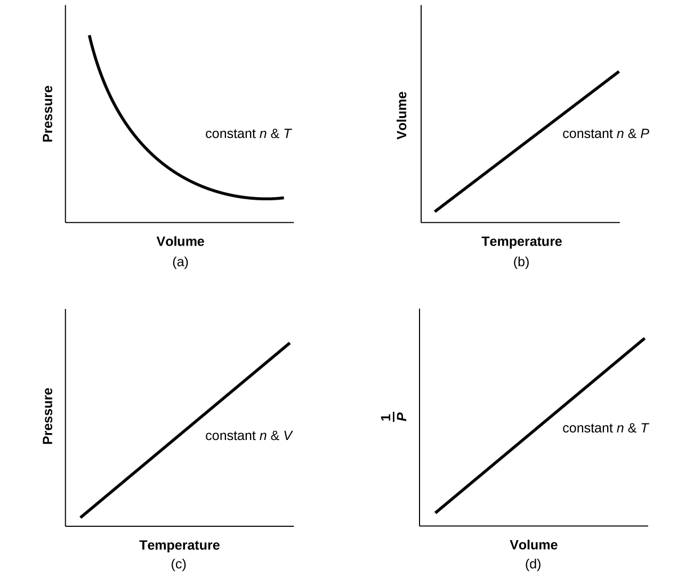

1. El filo de un cuchillo afilado tiene una superficie más pequeña que un cuchillo sin filo. Dado que la presión es la fuerza por unidad de área, una cuchilla afilada ejercerá una presión más alta con la misma cantidad de fuerza y cortará el material de manera más efectiva.
3. Acostarse distribuye tu peso sobre un área de superficie más grande, ejerciendo menos presión sobre el hielo en comparación con ponerse de pie. Si ejerces menos presión, es menos probable que rompas el hielo delgado.
5. 0,809 atm; 82.0 kPa
7. $2.2 \times 10^2 \; kPa$
9. Tierra: $14.7\; lb\; in^{–2}$; Venus: $1.30 \times\; 10^3\; lb in^{−2}$
11. (a) 101,5 kPa; (b) 51 torr
13. (a) 264 torr; (b) 35.200 Pa; (c) 0.352 bar
15. (a) 623 mm Hg; (b) 0,820 atm; (c) 83,1 kPa
17. Con un manómetro de extremo cerrado, no se observaría ningún cambio, ya que el líquido vaporizado contribuiría a presiones opuestas iguales en ambos brazos del tubo del manómetro. Sin embargo, con un manómetro abierto, se obtendría una lectura de presión más alta del gas de lo esperado, ya que $P_{gas} = P_{atm} + P_{vol\; líquido}$.
19. A medida que aumentan las burbujas, la presión disminuye, por lo que su volumen aumenta como lo sugiere la ley de Boyle.
21. (a) El número de partículas en el gas aumenta a medida que aumenta el volumen. (b) temperatura, presión
23. La curva estaría más a la derecha y más arriba, pero con la misma forma básica.
25. Aproximadamente 12.5 L
27. 3.40 × 103 torr
29. 12.1 L
31. 217 L
33. $8.190 \times 10^{–2}\; mol$; 5.553 g
35. (a) $7.24 \times 10^{–2} g$; (b) 23,1 g; (c) $1.5 \times\; 10^{–4}$ g
37. 5561 L
39. 46,4 g
41. Para un gas que exhibe un comportamiento ideal:

43. (a) 1.85 L $CCl_2F_2$; (b) 4.66 L $CH_3CH_2F$
45. 0.644 atm
47. La presión disminuye en un factor de 3.
49. 4.64 g L−1
51. 38.8 g
53. 72.0 g mol−1
55. 88.1 g mol−1; $PF_3$
57. 141 atm, 107,000 torr, 14,300 kPa
59. $CH_4$: 276 kPa; $C_2H_6$: 27 kPa; $C_3H_8$: 3.4 kPa
61. sí
63. 740 torr
65. (a) Determina los moles de $HgO$ que se descomponen; usando la ecuación química, determina los moles de $O_2$ producidos por la descomposición de esta cantidad de $HgO$; y determina el volumen de $O_2$ a partir de los moles de $O_2$, temperatura y presión. (b) 0.308 L
67. (a) Determina la masa molar de $CCl_2F_2$. A partir de la ecuación equilibrada, calcula los moles de $H_2$ necesarios para la reacción completa. De la ley de los gases ideales, convierte los moles de $H_2$ en volumen. (b) $3.72 \times 10^3\; L$
69. (a) Balancea la ecuación. Determina los gramos de $CO_2$ producidos y la cantidad de moles. A partir de la ley del gas ideal, determina el volumen de gas. (b) $7.43 \times 10^5\; L$
71. 42.00 L
73. (a) 18,0 L; (b) 0.533 atm
75. 10.57 L $O_2$
77. $5.40 \times 10^5\; L
79. $XeF_2$
81. 4.2 horas
83. La efusión se puede definir como el proceso por el cual un gas escapa a través de un agujero en el vacío. La ley de Graham establece que con una mezcla de dos gases A y B: $(\frac{Tasa\; A}{Tasa \; B}) = (\frac{\text{masa molar de B}}{\text{masa molar de A}})^{1/2}$. Tanto A como B están en el mismo contenedor a la misma temperatura y, por lo tanto, tendrán la misma energía cinética:
$KE_A = KE_BKE = \frac12mv^2$
Por lo tanto, $\frac{1}{2}m_Av^2_A = \frac{1}{2}m_Bv^2_B$
$\frac{v^2_A}{v^2_B} = \frac{mB}{mA}$
$(\frac{v^2_A}{v^2_B})^{1/2} = (\frac{m_B}{m_A})^{1/2}$
$\frac{v_A}{v_B} = (\frac{m_B}{m_A})^{1/2}$
85. $F_2$, $N_2O$, $Cl_2$, $H_2S$
87. 1.4; 1,2
89. 51.7 cm
91. Sí. En cualquier instante dado, hay un rango de valores de velocidades moleculares en una muestra de gas. Cualquier molécula puede acelerarse o desacelerarse a medida que choca con otras moléculas. La velocidad promedio de todas las moléculas es constante a temperatura constante.
93. $H_2O$. El enfriamiento reduce la velocidad de los átomos de $He$, haciendo que se comporten como si fueran más pesados.
95. (a) El número de colisiones por unidad de área de la pared del contenedor es constante. (b) La energía cinética promedio se duplica. (c) La velocidad cuadrática media de la raíz aumenta a $\sqrt{2}$ veces su valor inicial; urms es proporcional a $\sqrt{KE_{prom}}$.
97. (a) igual; (b) menor que; (c) 29,48 g mol−1; (d) 1.0966 g L−1; (e) 0,129 g/L; (f) $4.01 \times \; 10^5\; g$; capacidad de elevación neta = 384 lb; (g) 270 l; (h) 39.1 kJ min−1
99. Gases C, E y F
101. El comportamiento del gas más parecido a un gas ideal ocurrirá bajo las condiciones en (b). Las moléculas tienen altas velocidades y se mueven a través de mayores distancias entre colisiones; También tienen tiempos de contacto más cortos y las interacciones son menos probables. Las desviaciones ocurren con las condiciones descritas en (a) y (c). Bajo las condiciones de (a), algunos gases pueden licuarse. Bajo las condiciones de (c), la mayoría de los gases se licuarán.
103. $SF_6$
105. (a) Una línea horizontal recta en 1.0; (b) Cuando los gases reales están a bajas presiones y altas temperaturas, se comportan lo suficientemente cerca de los gases ideales como para aproximarse como tales; sin embargo, en algunos casos, vemos que a alta presión y temperatura, la aproximación del gas ideal se rompe y es significativamente diferente de la presión calculada por la ecuación del gas ideal. (c) Cuanto mayor es la compresibilidad, más importa el volumen. A presiones bajas, el factor de corrección para las atracciones intermoleculares es más significativo, y el efecto del volumen de las moléculas de gas en Z sería una pequeña compresibilidad decreciente. A presiones más altas, el efecto del volumen de las propias moléculas de gas en Z aumentaría la compresibilidad (ver figura 8.35). (d) Una vez más, a bajas presiones, el efecto de las atracciones intermoleculares en Z sería más importante que el factor de corrección para el volumen de las propias moléculas de gas, aunque quizás aún sea pequeño. A presiones más altas y bajas temperaturas, el efecto de las atracciones intermoleculares sería mayor. Ver figura 8.35. (e) bajas temperaturas